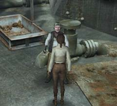
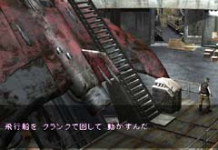

| 概要 | 地図 | |
| 淡いヒント集 | ヒント集 | 的確なヒント集 |
| 攻略最短ルート | Syberia 攻略へ |
| << 前の段階へ | 地域選択へ |
コムコルツグラッド
|

事情を知った大佐は、条件付きで鳥の駆除方法を教えると言った。その条件とは、ロケットを飛ばすことである。ロケットはハンスが設計したものである。 
これがロケットを発射する装置である。 まずは、装置のフタを取り、切れている2本の配線をくっつけよう。そして、次に左の鍵穴に大佐からもらった鍵を取り付けるのだ。これにより、右上のスイッチで装置の電源を入れることができる。 あとは、左から順にボタンを押していけばロケットは発射する。しかし、問題となるのは血液検査である。装置の横に採血パックが埋め込まれている。これは、電源が入っているときには自由に取り外しができる。 実際に大佐の血液を採取してみると分かるが、アルコールが多すぎと装置が判断し次の段階に進めない。そこで、あなたの血液を使おう。採血パックを取り付け、この装置の電源を切るのだ。そうすることで、装置に採血パックが固定される。その状態で、あなたの血液を入れておこう。 その後は簡単である。左から純にボタンを押せばよい。

発射間際に大佐はクランクを投げた。それを拾っておこう。 クランクはこのメガホンのような装置に使うものである。これにより、飛行船に群がる鳥たちがいなくなり、飛行船を動かすことができる。 飛行船を動かすこと自体は難しくない。レバーを引けばよい。 |
| << 前の段階へ | 地域選択へ |
| 概要 | 地図 | |
| 淡いヒント集 | ヒント集 | 的確なヒント集 |
| 攻略最短ルート | Syberia 攻略へ |
Syberia
| 目次へ戻る | ページの上部へ |